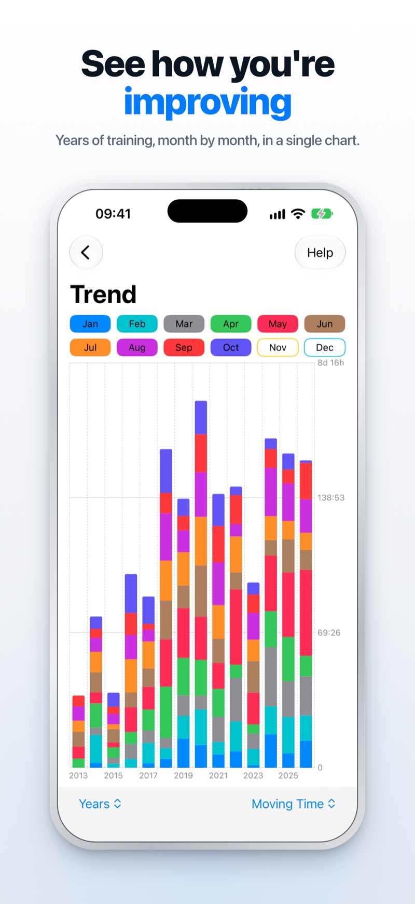
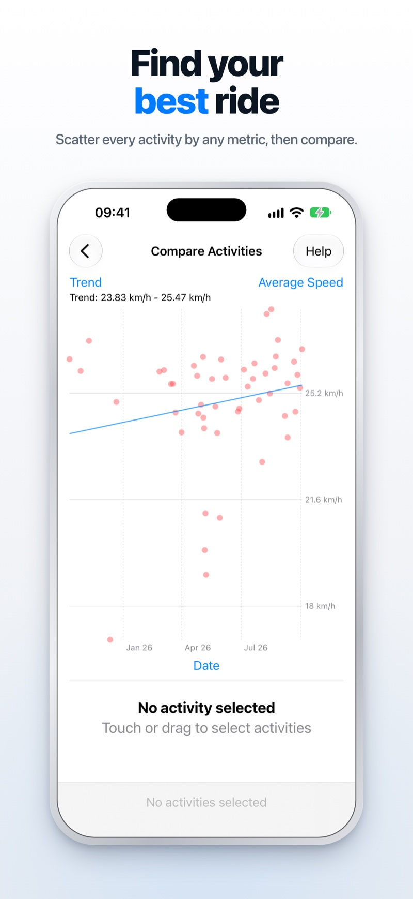

Free on iOS · Connects to Strava
Turn your rides into a fitness plan.
RideViewer gives you analytics that Strava doesn’t: fitness scores, fatigue tracking, trend analysis and activity comparison. Built for cyclists who want to train smarter, not just log miles.
Download on the App Store See features
What RideViewer does
Strava shows you your rides.
RideViewer shows you your fitness.
Fitness Score Tracking
Track CTL, ATL and TSB, the same metrics professional coaches use. Understand your current fitness, fatigue and form at a glance. Know when to push hard and when to back off.
Trend Analysis
Historical charts and scatter analysis across any metric: speed, power, heart rate, elevation gain. Spot training patterns and improvements over weeks, months and years.
Activity Comparison
Line up multiple rides side by side: splits, speed, cadence, power. Find out exactly what made your best ride your best ride, then do more of it.
Fitness Scores
The numbers coaches actually use
CTL (Chronic Training Load) measures your long-term fitness. ATL (Acute Training Load) tracks recent fatigue. TSB (Training Stress Balance) tells you your current form – how fresh you are relative to your fitness.
These three numbers, calculated from your entire Strava history, tell you more about your readiness to perform than any single workout ever could.
- 42-day fitness score (CTL)
- 7-day fatigue score (ATL)
- Form score updated daily (TSB)
- Weekly training load summaries
- Energy output in kilojoules

Trend Analysis
See how you’re actually improving
Most fitness apps show you one ride at a time. RideViewer shows you the arc: how your speed, power, heart rate and elevation gain evolve across your whole training history.
Use scatter charts to spot correlations, filter by date range or activity type, and compare year-on-year summaries to see the bigger picture of your progress.
- Historical performance charts
- Scatter analysis across any metric
- Year-on-year annual summaries
- Weekly ranking comparisons
- Filter by date, distance, type and more

Activity Comparison
Find out what made your best ride your best
Line up multiple rides side by side: splits, speed, cadence, power. Scatter every activity by any metric, pick out the standouts, then do more of what made them work.

Activity Detail
Every ride, completely broken down
Tap any activity for a full breakdown: stream charts for speed, power, heart rate, cadence and elevation, and split-time analysis to understand pace variation. Route maps show exactly where you rode.
- Stream charts for all data channels
- Split-time and pace analysis
- Route maps with MapKit
- Elevation and grade breakdowns

And more


App Store Reviews
What cyclists are saying
★★★★★An essential addition to Strava!
“Valuable functionality that is absent from Strava itself. Straightforward to use with lots of features.”
App Store review
★★★★★A nice way to view all your data!
“I like that it connects directly to Strava without requiring a separate signup. Really useful way to explore your activity history.”
App Store review
★★★★★Great app, works with all sports
“Works with all sports, not just cycling. Exactly the kind of analytics tool I’ve been looking for as a Strava user.”
App Store review
Start training smarter today.
RideViewer is free to download. Connect your Strava account and see your fitness in a whole new way.
Download on the App Store